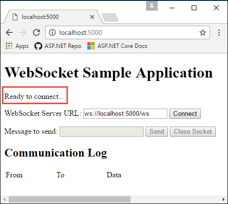

Introduction to WebSockets in ASP.NET Core
By Tom Dykstra and Andrew Stanton-Nurse
This article explains how to get started with WebSockets in ASP.NET Core. WebSocket is a protocol that enables two-way persistent communication channels over TCP connections. It is used for applications such as chat, stock tickers, games, anywhere you want real-time functionality in a web application.
View or download sample code. See the Next Steps section for more information.
Prerequisites
- ASP.NET Core 1.1 (does not run on 1.0)
Any OS that ASP.NET Core runs on:
- Windows 7 / Windows Server 2008 and later
- Linux
- macOS
Exception: If your app runs on Windows with IIS, or with WebListener, you must use:
- Windows 8 / Windows Server 2012 or later
- IIS 8 / IIS 8 Express
- WebSocket must be enabled in IIS
For supported browsers, see http://caniuse.com/#feat=websockets.
When to use it
Use WebSockets when you need to work directly with a socket connection. For example, you might need the best possible performance for a real-time game.
ASP.NET SignalR provides a richer application model for real-time functionality, but it runs only on ASP.NET, not ASP.NET Core. A Core version of SignalR is under development; to follow its progress, see the GitHub repository for SignalR Core.
If you don't want to wait for SignalR Core, you can use WebSockets directly now. But you might have to develop features that SignalR would provide, such as:
- Support for a broader range of browser versions by using automatic fallback to alternative transport methods.
- Automatic reconnection when a connection drops.
- Support for clients calling methods on the server or vice versa.
- Support for scaling to multiple servers.
How to use it
- Install the Microsoft.AspNetCore.WebSockets package.
- Configure the middleware.
- Accept WebSocket requests.
- Send and receive messages.
Configure the middleware
Add the WebSockets middleware in the Configure method of the Startup class.
app.UseWebSockets();
The following settings can be configured:
KeepAliveInterval- How frequently to send "ping" frames to the client, to ensure proxies keep the connection open.ReceiveBufferSize- The size of the buffer used to receive data. Only advanced users would need to change this, for performance tuning based on the size of their data.
var webSocketOptions = new WebSocketOptions()
{
KeepAliveInterval = TimeSpan.FromSeconds(120),
ReceiveBufferSize = 4 * 1024
};
app.UseWebSockets(webSocketOptions);
Accept WebSocket requests
Somewhere later in the request life cycle (later in the Configure method or in an MVC action, for example) check if it's a WebSocket request and accept the WebSocket request.
This example is from later in the Configure method.
app.Use(async (context, next) =>
{
if (context.Request.Path == "/ws")
{
if (context.WebSockets.IsWebSocketRequest)
{
WebSocket webSocket = await context.WebSockets.AcceptWebSocketAsync();
await Echo(context, webSocket);
}
else
{
context.Response.StatusCode = 400;
}
}
else
{
await next();
}
});
A WebSocket request could come in on any URL, but this sample code only accepts requests for /ws.
Send and receive messages
The AcceptWebSocketAsync method upgrades the TCP connection to a WebSocket connection and gives you a WebSocket object. Use the WebSocket object to send and receive messages.
The code shown earlier that accepts the WebSocket request passes the WebSocket object to an Echo method; here's the Echo method. The code receives a message and immediately sends back the same message. It stays in a loop doing that until the client closes the connection.
private async Task Echo(HttpContext context, WebSocket webSocket)
{
var buffer = new byte[1024 * 4];
WebSocketReceiveResult result = await webSocket.ReceiveAsync(new ArraySegment<byte>(buffer), CancellationToken.None);
while (!result.CloseStatus.HasValue)
{
await webSocket.SendAsync(new ArraySegment<byte>(buffer, 0, result.Count), result.MessageType, result.EndOfMessage, CancellationToken.None);
result = await webSocket.ReceiveAsync(new ArraySegment<byte>(buffer), CancellationToken.None);
}
await webSocket.CloseAsync(result.CloseStatus.Value, result.CloseStatusDescription, CancellationToken.None);
}
When you accept the WebSocket before beginning this loop, the middleware pipeline ends. Upon closing the socket, the pipeline unwinds. That is, the request stops moving forward in the pipeline when you accept a WebSocket, just as it would when you hit an MVC action, for example. But when you finish this loop and close the socket, the request proceeds back up the pipeline.
Next steps
The sample application that accompanies this article is a simple echo application. It has a web page that makes WebSocket connections, and the server just resends back to the client any messages it receives. Run it from a command prompt (it's not set up to run from Visual Studio with IIS Express) and navigate to http://localhost:5000. The web page shows connection status at the upper left:

Select Connect to send a WebSocket request to the URL shown. Enter a test message and select Send. When done, select Close Socket. The Communication Log section reports each open, send, and close action as it happens.